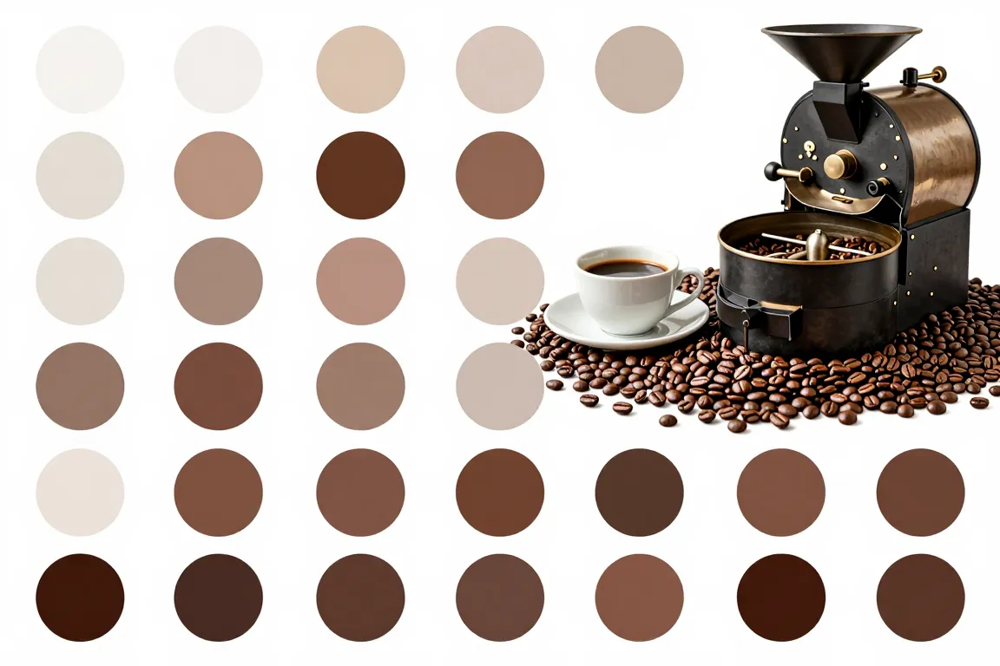

En profil planlagt som ett brett: et rutenett med 3 kolonner av kvadratiske bilder med én preset, én palett og en fast rytme av bildetyper. Seeren leser hele rutenettet før ett bilde.

Kjerneidé
Rutenettet er produktet: hvert bilde tjener profilsiden, så tone, farge og avstand gjentas til feeden leses som én merkevare.
Designprinsipper
Legg bilder i 3 kolonner med 2px mellomrom, hvert et 1:1-kvadrat på 1080px.
Bruk én preset på hvert bilde, slik at gjennomsnittsfargen holder seg innenfor 15° gjennom feeden.
Begrens paletten til 3 farger og gjenta hver av dem i minst 1 av hver 3 bilder.
Veksle bildetyper i en fast rytme: portrett, detalj, tekstflis, i rader på 3.
Bygg tekstfliser på en flat farge fra paletten med et sentrert sitat på 48px til 64px.
Hold profilhodet enkelt: en rund avatar på 77px, en bio på 14px og en rad med 5 høydepunktsirkler på 64px.
Planlegg 9 innlegg frem i tid i en planleggingsapp og sjekk rutenettet før hvert innlegg.